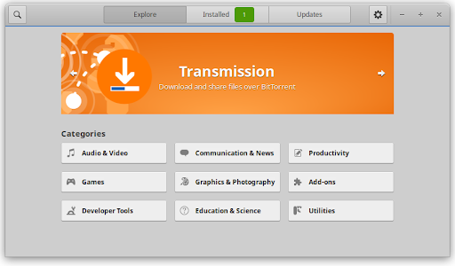
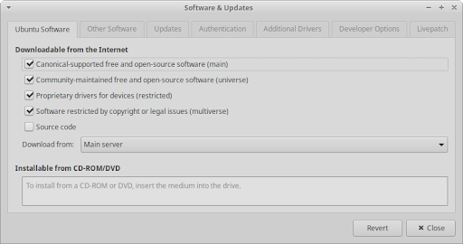
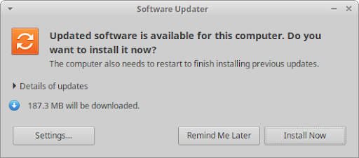
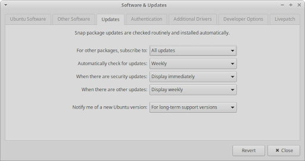

Índice
O software que se encontra disponível para instalação no Xubuntu encontra-se armazenado em repositórios de software online que contêm software confiável. Os repositórios de software do Linux são semelhantes aos catálogos de software utilizados por lojas de aplicações desktop como a Microsoft Store e a Mac App Store, ou por lojas de aplicações móveis como a Play Store da Google e a App Store da Apple.
Este repositórios armazenam pacotes de software, que são os componentes individuais que compõem o software que o seu computador utiliza como um conjunto. Os pacotes de software são armazenados desta forma para que possam ser partilhados por diferentes programas. Os repositórios de software do Xubuntu são organizados e mantidos pelos responsáveis do sistema operativo e contêm uma ampla seleção de software livre e de código aberto. Os responsáveis pelo sistema operativo certificam-se de que o software funciona corretamente e não possui spyware nem vírus.
O Xubuntu vem com aplicações que facilitam a instalação, atualização e desinstalação de software proveniente dos repositórios.
O Centro de Software ( gnome-software
gnome-software gnome-software-plugin-snap
gnome-software-plugin-snap gnome-software-plugin-flatpak
gnome-software-plugin-flatpak
A Snap Store (install) é uma loja para a gestão de aplicações que utilizam o sistema de gestão de pacotes snap. As aplicações snap encontram-se confinadas para maior segurança, atualizações automatizadas e podem ser executadas em diferentes distribuições Linux. A Snap Store também se encontra disponível como uma interface Web.
O Synaptic ( synaptic
synaptic
O apt ou apt-get é um ferramenta de linha de comandos para a gestão de pacotes que fornece funcionalidades semelhantes às do Synaptic e que beneficia aqueles que não têm acesso a uma interface gráfica ou preferem utilizar o terminal. Para informações acerca dos comandos básicos do apt, consulte a documentação apt do Ubuntu.
O snap ( snapd
snapd
![[Nota]](../../libs-common/images/note.png)
|
|
|
Poderá necessitar de permissões de administrador para adicionar, atualizar e remover software e só pode utilizar um gestor de pacotes de cada vez para a gestão de pacotes. Existem lojas de aplicações e gestores de pacotes adicionais, incluindo o Flathub, a AppImageHub, a Ubuntu MATE Software Boutique, o AppGrid e o Aptitude ( |
Pode executar o Centro de Software do GNOME a partir do  (
( Ctrl+Esc) ou do Localizador de aplicações (
Ctrl+Esc) ou do Localizador de aplicações ( Alt+F3). Aparecerá com a descrição Software e pode ser encontrado por defeito na categoria Favoritos, pelo que será visível assim que abrir o
Alt+F3). Aparecerá com a descrição Software e pode ser encontrado por defeito na categoria Favoritos, pelo que será visível assim que abrir o  .
.

Assim que o executar, será colocado no separador Explorar do Software do GNOME, o qual lhe permite navegar pelas categorias e clicar no botão presente na barra de título para encontrar facilmente uma aplicação através do seu nome ou palavra-chave. Assim que clicar numa aplicação, chegará à sua página de informações, a qual contém a sua descrição, imagens, ligação Web, análises e outros detalhes. Nesta página tem as opções de instalar, executar ou remover a aplicação, bem como escrever uma análise.
Os outros dois separadores da barra de título são o Instaladas e o Atualizações. O separador Instaladas lista todas as aplicações instaladas no sistema e fornece um acesso fácil à sua remoção. O separador Atualizações apresenta as aplicações elegíveis para atualização e também possui um botão na barra de título para procurar novas atualizações.
![[Cuidado]](../../libs-common/images/caution.png)
|
|
|
Algumas aplicações dependem de outras para poderem funcionar corretamente. Caso tente remover um aplicação que é necessária ao funcionamento de outra, ambas serão removidas. Será solicitada a confirmação de que é isso que pretende que aconteça antes das aplicações serem removidas. |
|
|
|
|
O Software do GNOME não remove as dependências de pacotes de software que são instaladas com uma aplicação. Para remover quaisquer dependências que já não são necessárias ao sistema, execute |
Os repositórios de software do Ubuntu contêm milhares de aplicações curadas dos melhores FOSS (Software Livre e de Código Aberto) tanto para entretenimento como para produtividade. A gestão destes repositórios de software e de repositórios adicionais é executada através da aplicação Software e Atualizações, encontrada na categoria Definições do  , bem como no
, bem como no  . Também pode ser aberta através do botão da da barra de título do Software do GNOME ou do botão presente no canto esquerdo da barra de título.
. Também pode ser aberta através do botão da da barra de título do Software do GNOME ou do botão presente no canto esquerdo da barra de título.

No separador Software do Ubuntu, pode ativar ou desativar os quatro principais repositórios de software do Ubuntu, bem como selecionar o servidor de onde os pacotes transferidos provêm. O separador Outro Software permite-lhe ativar, desativar, adicionar, editar e remover outros repositórios online e offline.
Para aplicações que não se encontram disponíveis ou desatualizadas nos repositórios de software, os utilizadores podem visitar a página do autor do software e transferir o ficheiro de instalação para Ubuntu ou Linux. Este ficheiro possuirá a extensão .deb e é um pacote de software Debian. Assim que for transferido, abra o ficheiro e ele executará o Software do GNOME com a opção de instalação. Em alternativa, pode ser instalado através do Instalador de Pacotes GDebi ( gdebi
gdebi
Alguns autores de aplicações podem fornecer um repositório de terceiros, conhecido como PPA (Arquivo de Pacote Pessoal), o qual pode ser adicionado ao seu sistema. Outros podem fornecer o seu software através de um instalador Flatpak ou de um AppImage, o qual é executado sem instalação.
|
|
|
|
Transfira apenas aplicações de terceiros de fontes confiáveis de forma a limitar o risco de obter malware, junkware ou ransomware. Caso pretenda instalar aplicações Windows, por favor consulte o Capítulo 14, Migração. |
De forma a manter o seu sistema atualizado e protegido contra eventuais problemas de segurança, o Xubuntu possui um notificador de atualizações que é executado em segundo plano. Procura atualizações uma vez por semana e quando as encontra, executa as Atualizações de Software.
|
|
|
|
Para desativar o serviço do notificador de atualizações, desative a entrada Notificador de Atualizações no separador Aplicações automáticas das definições de Sessão e arranque. Contudo, isto não é recomendado. |
Para verificar a existência de software manualmente, pode abrir as Atualizações de Software, presente na categoria Definições do  , bem como na categoria Sistema do . Assim que abrir a janela, esta irá consultar os repositórios de software, comparar a lista de software com as versões instaladas no seu sistema e apresentar as que podem ser atualizadas.
, bem como na categoria Sistema do . Assim que abrir a janela, esta irá consultar os repositórios de software, comparar a lista de software com as versões instaladas no seu sistema e apresentar as que podem ser atualizadas.

Pode definir a frequência com que as Atualizações de Software consultam atualizações e o que deve acontecer quando estas são encontradas . Estas definições podem ser acedidas quando as Atualizações de Software são executadas através do clique no botão no canto inferior esquerdo. Isto abrirá a janela Software e Atualizações com o separador Atualizações selecionado.

|
|
|
|
As Atualizações de Software também o irão notificar quando uma nova versão do Xubuntu se encontrar disponível. Saiba mais no Capítulo 16, Atualizações. |
 |
 |
|
| Capítulo 4. Aplicações predefinidas |

|
Capítulo 6. Definições - Personalização |